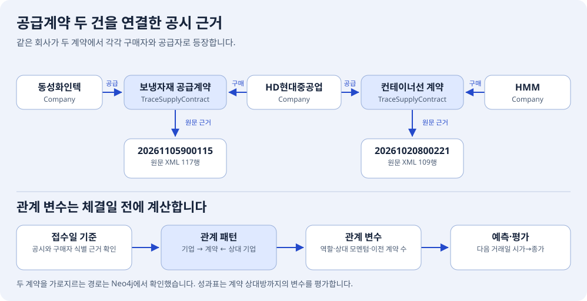
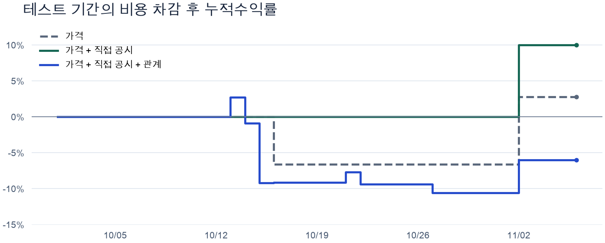

공급계약 관계는 한국 주식의 방향 예측에 기여하는가?
OpenDART 공시에 적힌 공급자와 구매자를 연결하고, 계약 상대방 정보가 다음 거래일의 방향 예측에 도움이 되는지 시험했습니다. 테스트에서 관계를 추가한 모형은 직접 공시 모형보다 196건 중 한 건을 더 맞혔습니다. 왕복 비용 20bp를 반영한 수익률은 관계 모형 −6.01%, 직접 공시 모형 +10.02%였습니다. 직접 공시 모형의 수익은 거래 한 건에서 나왔습니다.
연구 배경과 질문
공급계약 공시에는 제출 기업의 계약 규모와 함께 상대 기업이 적혀 있습니다. 같은 계약을 공급자에게는 수주, 구매자에게는 구매로 읽을 수 있습니다. 우리는 직접 공시한 기업의 정보에 상대 기업의 역할과 가격 이력을 더하면, 같은 종목과 날짜에서 예측이 달라지는가를 묻습니다. 방향 분류와 실제 체결을 가정한 수익률을 별도로 평가했습니다.
관련 연구
TRACE는 과거의 시간 지식그래프에서 규칙을 뽑고, 추론 경로를 공개 텍스트에 연결해 다음 거래일 방향을 예측했습니다. 이번 실험은 공개 시점으로 경로를 제한하고 근거까지 추적하는 설계를 가져왔습니다. 모델은 공급계약 상대방 변수를 사용하는 로지스틱 회귀입니다. TRACE의 미국 시장 종가 간 수익률과 우리 시가→종가 수익률은 평가 구간이 다릅니다. Ding 외, TRACE (2026)
Temporal Relational Ranking은 기업 관계와 주가 시계열을 함께 모델링해 종목 순위를 예측합니다. 이 연구는 복잡한 그래프 모형을 도입하기 전에, 가격 변수와 공시 변수에 상대 기업 정보를 더했을 때의 차이를 같은 표본에서 측정합니다. Feng 외, ACM TOIS (2019)
사건 연구는 공시 같은 사건 주변의 가격 움직임을 기준 수익률과 대조합니다. 여기서는 같은 사건의 관측 시점과 가격 창을 정하는 데 이를 참고했습니다. 이번 평가의 추정 대상은 사건에 조건부인 방향 예측 성능이며, 사건의 인과효과를 식별하려면 별도의 연구 설계가 필요합니다. MacKinlay, JEL (1997)
데이터와 방법론
기업 역할과 원문 근거를 연결합니다
공급계약 최초 공시 후보 1,401건에서 계약 설명이 확인된 원문 1,200건을 선별했습니다. 210건은 접수일까지 확보한 DART 목록으로 구매자 이름을 고유 기업 코드에 매핑할 수 있었습니다. 조선업 계약 세 건은 Neo4j에서 회사, 계약, 공시, XML 근거를 함께 조회했습니다. 아래 그림의 두 계약은 서로 다른 접수번호와 근거를 가집니다.

실험에서는 세 규칙을 적용했습니다. 공시와 구매자 식별 근거는 접수일까지 확보된 목록으로 제한합니다. 기업이 맡은 공급·구매 역할은 계약마다 기록하고, 상대 기업이 식별된 경우에만 상대 기업의 모멘텀과 과거 동일 기업 쌍의 계약 건수를 계산합니다. 마지막으로 공시 이후 첫 거래일에 가격 라벨을 붙이고, 분할 경계를 넘기는 라벨은 제외합니다. 그림의 두 계약을 거친 경로는 Neo4j 조회로 확인했습니다. 성과표에 포함된 관계 변수는 개별 계약의 상대 기업까지입니다.
시간순 분할과 비교 모형
| 구간 | 기간 | 표본 | 종목 | 상승 표본 |
|---|---|---|---|---|
| 학습 | 1~6월 | 693 | 338 | 239 |
| 검증 | 7~8월 | 251 | 168 | 86 |
| 테스트 | 10월 1일~11월 6일 | 196 | 145 | 90 |
기업·체결일별로 공시를 묶고, 종목 식별과 직전 21거래일 가격 이력을 확인한 1,140행을 사용했습니다. 9월은 분할에서 제외했습니다. 입력 가격은 체결 이전에 끝난 시장 세션으로 제한했습니다. 다음 세션의 실제 수익률을 종가 / 시가 − 1로 정의하고, 0보다 높으면 상승으로 분류했습니다.
| 모형 | 입력 정보 |
|---|---|
| 가격 | 1·5·20거래일 모멘텀, 직전 거래량 |
| 가격 + 직접 공시 | 앞 모형에 공급자 공시 건수, 매출 대비 계약 규모와 관측 수 추가 |
| 가격 + 직접 공시 + 관계 | 앞 모형에 구매 역할, 상대 기업 수, 상대의 직전 5일 모멘텀, 가격 확인 수, 이전 동일 기업 쌍 계약 수 추가 |
검증 구간의 균형 정확도로 정규화 강도를 고른 뒤 학습·검증 데이터를 합쳐 최종 모형을 학습했습니다. 3개 모형 모두 같은 테스트 표본을 사용했습니다. 상승 확률이 0.5 이상인 종목은 시가에 동일가중 매수하고 종가에 청산했습니다. 왕복 거래비용 20bp를 공제했습니다. 거래가 없는 날은 수익률을 0으로 두고, 무위험수익률 0과 연 252거래일 기준으로 샤프를 계산했습니다.
실험 결과
| 모형 | 정확도 | 균형 정확도 | 상승 F1 | 진입 건수 | 순수익률 | 샤프 | 최대낙폭 |
|---|---|---|---|---|---|---|---|
| 가격 | 54.08% | 50.08% | 2.17% | 2 | +2.79% | 0.90 | −6.57% |
| 가격 + 직접 공시 | 54.59% | 50.56% | 2.20% | 1 | +10.02% | 3.17 | 0.00% |
| 가격 + 직접 공시 + 관계 | 55.10% | 51.53% | 13.73% | 12 | −6.01% | −1.57 | −12.94% |
관계 모형은 직접 공시 모형이 틀린 관측 6건을 맞혔고, 직접 공시 모형이 맞힌 관측 5건을 틀렸습니다. 상승을 맞힌 건수는 1건에서 7건으로 늘었으며, 비상승을 상승으로 예측한 건수는 0건에서 5건으로 늘었습니다.

거래 횟수를 맞춘 보조 검증
테스트 결과를 확인한 뒤, 후보가 있던 같은 24일에 각 모형의 점수 1위 종목을 한 건씩 매수하는 보조 규칙을 적용했습니다. 직접 공시 모형의 순수익률과 샤프는 −24.12%와 −3.98, 관계 모형은 −28.54%와 −4.49였습니다. 이 표본에서는 매수 수를 맞춰도 관계 정보가 비용 후 성과를 높인 근거를 얻지 못했습니다. 비용 민감도와 재현 절차
한계
- 표본과 기간. 테스트는 25거래일, 196개 종목·거래일입니다. 구매자 역할이 연결된 표본은 29개입니다. 직접 공시 모형의 매수 신호도 한 건에 그쳤습니다. 독립 기간에서 결과가 반복되는지 확인해야 합니다.
- 원문과 기업 매핑. 전체 평가에는 자동 추출과 법인명 매칭 후보가 포함됐습니다. 현재 거래소 정보만으로 과거 상장 상태를 확정할 수 없으며, 미공개 상대 기업과 표본 확보 편차가 포함됩니다.
- 가격과 체결. 시세 제공처의 수정주가 여부와 실제 시가·종가 체결을 검증하지 않았습니다. 20bp는 왕복 비용 시나리오입니다. 거래세·수수료·슬리피지·거래정지를 실제 조건으로 재검증할 필요가 있습니다.
- 추론 범위. 논문 방식의 자동 다중 홉 규칙 마이닝과 LLM 검증은 이번 성과표의 실험 대상에서 제외했습니다.
후속 연구
- 공급자·구매자 역할과 기업 코드 매핑을 독립 표본에서 검수합니다. 지분·계약 정정까지 포함하려면 값의 효력과 공개 가능 시점을 별도로 저장합니다.
- 거래소 자료로 과거 종목 상태와 거래일을 대조한 뒤 기간을 넓힙니다. 임계값·동일 매수 건수 규칙·거래비용을 평가 전에 고정하고, 날짜 단위의 불확실성을 보고합니다.
- 실제 별도 기업 관계를 거친 2홉 경로를 추가하고, 상대 기업을 제거하거나 잘못 연결했을 때의 성능과 비교합니다. 이렇게 하면 단순히 정보를 더 준 효과와 올바른 관계의 효과를 구별할 수 있습니다.
실험은 EC2 CPU에서 실행했고 입력과 결과를 해시로 대조했습니다. 학습·백테스트 코드 · FINTOS 실험 설계